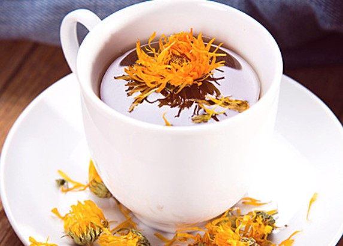

金盏花茶
金盏花茶，橙黄色花朵犹如太阳的金盏花（Calendula officinalis），又名常春花，原产于南欧、地中海沿岸一带。据说古罗马人看见金盏花在初一开花，于是依“Calends”（罗马古历初一）为它命名，这就是其属名的由来。至于英文名“Pot Marigold”，相传于圣母玛丽亚有关，由于圣母是童贞女，因此藉金盏花解经痛及调经的功能庇助少女们。
古埃及人认为金盏花能延缓衰老，印度人则尊奉它为神圣的花。中世纪时人们已将金盏花用于疗伤，更藉以对抗瘟疫和黑死病。再在法国诺曼底地区，则以金盏花为牛没添染金黄色泽。相传它还有预测天气的功能：如果花在早晨7点以前绽放，当日必定是晴天，反之就将要下雨了。
制作方法
可以根据其原料的不同而制作不同的金盏花茶，具体制作方法如下：
金盏花阳光茶
金盏花的花型有如小太阳一般，而黄色的茶汤又像亮橙橙的阳光般温暖，马鞭草帮你提神扫除睡意，玫瑰果提供一天所需要的维生素C，使人精力充沛。
材料：
干燥金盏花1大匙 干燥马鞭草1小匙 玫瑰果1小匙 热开水500毫升
过程
干燥金盏花用热开水冲泡一下，浸泡约30秒取出

将金盏花与马鞭草和玫瑰果一起放入壶中，冲入500毫升热开水，浸泡3分钟即可
金盏花消暑茶
金盏花茶除了可以消热解暑之外，还有养肝明目、消炎养颜的功效，夏季饮用不仅清凉去热还能喝出好皮肤。如果不习惯花朵本身的味道，可依个人口味加入进行调味。
材料
干燥金盏花3～5克 绿茶1茶匙 热开水适量
过程
将干燥金盏花用热开水冲一下，浸泡30秒后洗净
将金盏花与绿茶一起放入壶中，加入热开水浸泡约3分钟即可饮用
金盏花薄荷茶
薄荷与金盏花搭配，能提神下火，稳定情绪，最适合熬夜后的早上饮用。如果手边没有新鲜薄荷，可以用干燥薄荷1小匙代替。
材料
干燥金盏花1匙 新鲜薄荷5枝 热开水500毫升
过程
将干燥金盏花用热水冲一下，再浸泡30秒后洗净
将金盏花和薄荷一起放入壶中，加入500毫升热开水，浸泡30秒即可
选购方法
颜色太鲜艳、太漂亮的金盏花茶不能选，可能是硫磺熏的，这种金盏菊用滚水冲泡后，有硫磺味。要选有花萼，花萼偏绿色的新鲜菊花。
颜色发暗的金盏菊也不要选，这种金盏菊是陈年老菊花，且受潮了，可能还长了霉，这样的菊花吃了对身体有害。
用手摸一摸，松软的，顺滑的金盏菊比较好；花瓣不零乱，不脱落，即表明是刚开的就采摘了。
菜市场上的金盏菊质量没有保证，大医院或大药店的金盏菊有独立包装，有药师把关，相对来说，质量有保障。